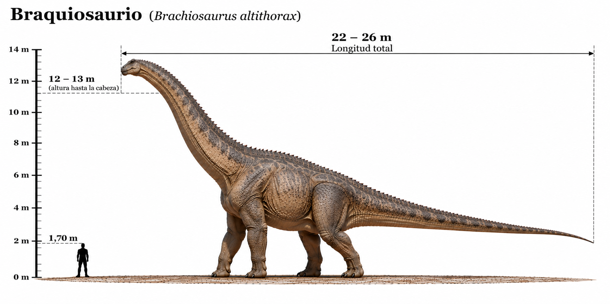

Brachiosaurus altithorax

El Brachiosaurus altithorax fue uno de los grandes dinosaurios saurópodos herbívoros que habitaron América del Norte durante el Jurásico tardío, hace aproximadamente entre 154 y 150 millones de años. Se caracterizaba por su cuello extraordinariamente largo y por tener las patas delanteras más largas que las traseras, lo que hacía que su espalda estuviera inclinada hacia la parte posterior. Esta particular anatomía le permitía mantener la cabeza a gran altura y alimentarse de la vegetación de árboles elevados, a diferencia de otros saurópodos que consumían plantas más próximas al suelo. Poseía un cuerpo enorme, una cabeza relativamente pequeña y una cola larga. Su gran tamaño probablemente le proporcionaba cierta protección frente a los depredadores de su época.
- Grupo: Saurópodo.
- Familia: Brachiosauridae (braquiosáuridos).
- Período: Jurásico tardío (hace aproximadamente 154–150 millones de años).
- Alimentación: Herbívoro.
- Longitud: Aproximadamente 18–22 metros.
- Altura: Aproximadamente 9–12 metros hasta la cabeza, dependiendo de la postura del cuello.
- Localización: América del Norte (actual Estados Unidos).
